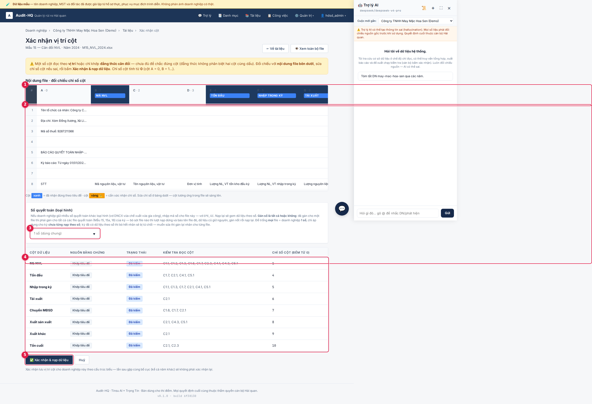
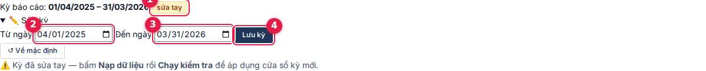
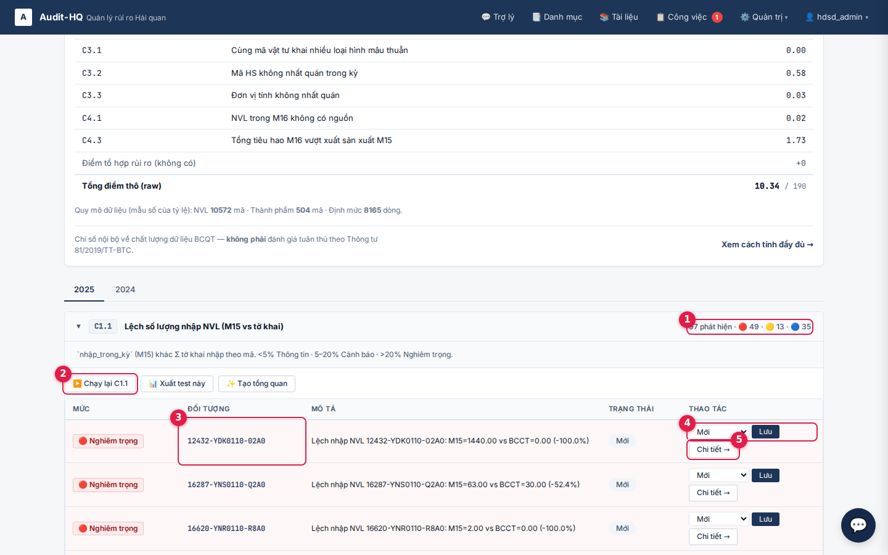
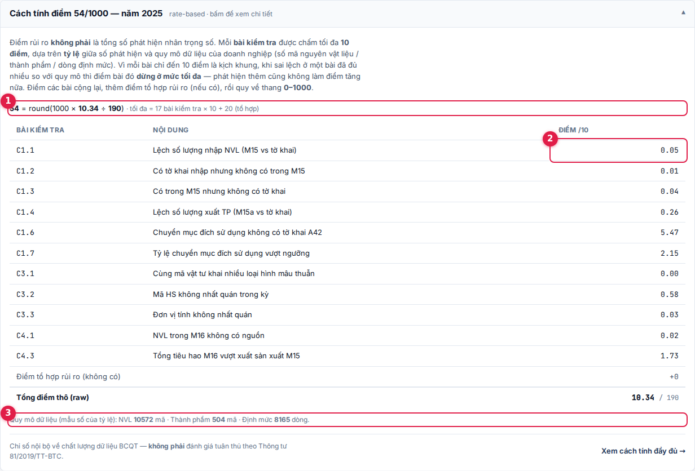
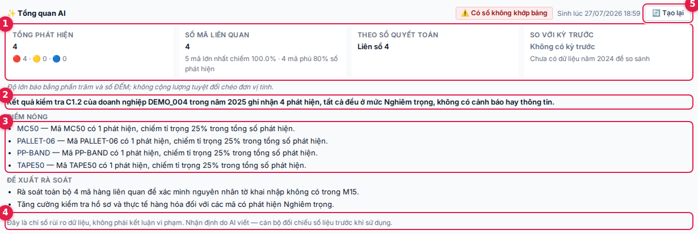
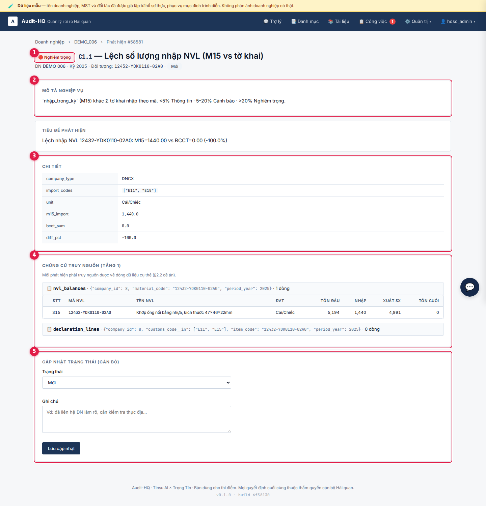

Trang này mô tả đường đi của dữ liệu trong Audit-HQ — từ tệp Excel doanh nghiệp nộp tới điểm rủi ro
và phát hiện hiển thị trên màn hình — rồi ghi lại kết quả đối chiếu ba hồ sơ đã phân tích: 002, 004
và 006. Trọng tâm là hồ sơ 004: một pháp nhân nộp hai bộ báo cáo quyết toán trên cùng một
luồng tờ khai. Hướng dẫn thao tác nằm ở
cẩm nang sử dụng; trang này không
lặp lại phần đó.
🔀
Luồng dữ liệuSáu chặng, đầu vào → đầu ra
🏭
Ba hồ sơ pilot002 · 004 · 006
📚
Hồ sơ hai sổTrường hợp 004
❓
Câu hỏi còn giá trị10 nội dung đề xuất làm rõ
Không tìm thấy nội dung phù hợp. Thử từ khoá khác.
·
Nguyên tắc trình bày
Đọc mục này trước. Nó quy định cách hiểu mọi con số phía sau.
·
Ba loại phát biểu, tách bạch
Sự thật Số liệu đọc trực tiếp từ chứng từ hoặc từ cơ sở dữ liệu đang chạy, kiểm chứng lại được.
Suy luận Nhận định rút ra từ các sự thật nêu trên, chưa được xác nhận.
Căn cứ pháp lý Dẫn chiếu văn bản quy phạm pháp luật.
Ba loại này không trộn vào nhau trong cùng một câu. Nội dung không mang nhãn là mô tả cơ chế
của hệ thống, không phải phát biểu về hồ sơ doanh nghiệp.
Giới hạn của phân tích. Kết quả dựa hoàn toàn trên bộ dữ liệu được cung cấp. Một số nội dung cho thấy dữ liệu này có thể chưa đầy đủ (xem mục D1), nên các nhận định nêu trong tài liệu chưa phải kết luận và có thể thay đổi khi có thêm thông tin. Tài liệu không nhằm đánh giá mức độ tuân thủ của doanh nghiệp.
Ẩn danh. Doanh nghiệp gọi theo mã thư mục 002 · 004 · 006. Tài liệu không nêu tên doanh nghiệp, tên đối tác, mã số thuế hay số tờ khai. Mã vật tư và mã sản phẩm giữ nguyên vì cần thiết để đối chiếu và đã có trong bản trình diễn công khai.
Nguồn số liệu. Mọi con số về phát hiện, điểm rủi ro và quy mô dữ liệu lấy từ cơ sở dữ liệu đang chạy, đối chiếu ngày 28/07/2026. Các con số về nội dung chứng từ (cột biểu mẫu, ghi chú, hợp đồng) lấy từ báo cáo phân tích sơ bộ hồ sơ 004 và các bản ghi phân tích pilot, đã kiểm lại với tệp gốc.
A
Luồng dữ liệu
Sáu chặng, từ tệp doanh nghiệp nộp tới màn hình cán bộ. Mỗi chặng nêu đầu vào, việc hệ thống làm, đầu ra, và giới hạn của chặng đó. Ảnh minh hoạ lấy từ dữ liệu trình diễn.
A1
Đọc và chuẩn hoá tệp nguồn
Đầu vào
Bốn loại tệp cho mỗi kỳ: Mẫu 15 (cân đối nguyên vật liệu), Mẫu 15a (cân đối thành phẩm), Mẫu 16 (định mức), Báo cáo hàng chi tiết (bảng kê tờ khai).
Hệ thống làm
Mỗi loại một bộ đọc riêng. Chọn sheet theo nội dung chứ không theo tên; dò dòng tiêu đề thay vì dùng số dòng cố định; suy vai trò cột từ đẳng thức của chính biểu — tồn cuối = tồn đầu + nhập − các cột xuất — thay vì tin vào nhãn cột. Ép kiểu số và đếm ô không ép được.
Đầu ra
Bốn bảng Tầng 1. Mỗi dòng giữ liên kết về dòng dữ liệu gốc để truy nguồn (chặng A6).
Khi đẳng thức không phân biệt được hai cột cùng dấu, hệ thống không đoán — nó dừng lại và yêu cầu cán bộ xác nhận chỉ số cột.
Ánh xạ cột đã xác nhận được lưu theo doanh nghiệp; lần sau gặp cùng bố cục thì không hỏi lại.
Xác nhận ánh xạ cột

Cột xanh = nhận đúng theo tiêu đề · cột vàng = cần cán bộ xác nhận chỉ số.
Bố cục biểu mẫu không thống nhất giữa doanh nghiệp. Trong chín hồ sơ đã đối chiếu, tám hồ sơ dùng bố cục Mẫu 15 một cột nhập; riêng 004 tách bốn cột 6a–6d kèm cột tổng. Cột nào là "nhập trong kỳ" quyết định kết quả của mọi kiểm tra phía sau — đây là lý do bước xác nhận cột tồn tại.
A2
Nhận diện loại hình và kỳ báo cáo
Đầu vào
Mã loại hình trên bảng kê tờ khai; kỳ khai báo trên hồ sơ doanh nghiệp.
Hệ thống làm
Đếm số dòng tờ khai theo mã loại hình, chọn nhóm có nhiều dòng nhất. Kỳ nhận dưới dạng cửa sổ [từ ngày, đến ngày], không mặc định năm dương lịch; dòng tờ khai lọc theo cửa sổ đó.
Đầu ra
Loại hình dùng làm tập mã đối chiếu cho nhóm kiểm tra C1; cửa sổ kỳ dùng để lọc dòng tờ khai.
Loại hình
Mã nhập nguyên vật liệu
Mã xuất
DNCX — doanh nghiệp chế xuất
E11E15
E42
Gia công
E21E23
E52E54
SXXK — sản xuất xuất khẩu
E31E33
E62
Sửa kỳ báo cáo

Kỳ đặt theo cửa sổ ngày; nhãn năm chỉ là tên kỳ quyết toán.
Hai trong ba hồ sơ pilot dùng kỳ tài chính 01/04 – 31/03. Nếu lọc tờ khai theo năm dương lịch thì 002 mất 3.014/11.115 dòng và 004 mất 163/547 dòng — toàn bộ quý đầu của năm sau. Cửa sổ kỳ là lý do con số mất mát đó hiện bằng 0.
Mỗi pháp nhân chỉ được gán một loại hình. Phép đếm nêu trên lấy nhóm mã có nhiều dòng nhất, nên kết quả luôn là một loại hình duy nhất — kéo theo một tập mã nhập và một tập mã xuất dùng cho cả nhóm kiểm tra C1.
Ở 004, kết quả này không gây sai sót: cả 547 dòng tờ khai đều là mã chế xuất (E11 175 · E15 172 · E42 200), không có dòng gia công nào để bỏ sót.
Nhưng nếu một pháp nhân giữ hai sổ và khai mỗi sổ theo bộ mã riêng của sổ đó — sổ chế xuất khai E11/E15/E42, sổ gia công khai E21/E23/E52/E54 — thì nhóm có ít dòng hơn sẽ thua ở phép đếm. Mã loại hình của sổ đó rơi ra ngoài tập mã đối chiếu, và C1.1–C1.4 kết luận sai rằng vật tư của sổ đó chưa được khai tờ khai. Trường hợp này chưa xảy ra trên dữ liệu pilot — xem mục C4.
A3
Chạy sáu nhóm kiểm tra
Đầu vào
Bốn bảng Tầng 1 của một cặp (doanh nghiệp, kỳ).
Hệ thống làm
Chạy 17 bài kiểm tra thuộc sáu nhóm. Mỗi bài chạy đúng một lần cho mỗi cặp (doanh nghiệp, kỳ). Toàn bộ chạy nền qua hàng đợi công việc, không chạy đồng bộ trong lúc cán bộ chờ.
Đầu ra
Danh sách phát hiện. Mỗi phát hiện có mức độ, đối tượng, mô tả và chứng cứ truy nguồn.
Nhóm
Nội dung
Bài kiểm tra
C1
Số lượng nhập / xuất — đối chiếu biểu quyết toán với tờ khai
C1.1C1.2C1.3C1.4C1.6C1.7
C2
Cân bằng và tồn kho — đẳng thức của từng dòng biểu, tồn cuối âm
C2.1C2.2C2.3C2.4
C3
Phân loại hàng hoá — loại hình mâu thuẫn, mã HS, đơn vị tính
C3.1C3.2C3.3
C4
Định mức — nguồn của vật tư trong Mẫu 16, tiêu hao lý thuyết so với xuất sản xuất
C4.1C4.3
C5
Truy nguồn nguyên vật liệu nhập khẩu — có xuất sản xuất mà không có nguồn
C5.1
C6
Kiểm tra liên kỳ — tồn đầu kỳ N so với tồn cuối kỳ N−1
C6.1
C2 vô hiệu trên cả ba hồ sơ pilot. Ở cả 002, 004 và 006, ô tồn cuối của Mẫu 15 là ô công thức nội bộ tệp Excel, nên đẳng thức cân đối đóng theo định nghĩa. Kết quả chạy thật: 0 phát hiện C2.x ở cả ba. Đây là kết quả rỗng vì cấu trúc, không phải vì dữ liệu sạch.
C6 cần hai kỳ. Chỉ 006 có hai kỳ trong bộ dữ liệu, nên đây là hồ sơ duy nhất C6 chạy được.
Một nhóm phát hiện

Mỗi bài kiểm tra một khối, tách theo ba mức độ.
A4
Chấm điểm rủi ro
Đầu vào
Các phát hiện chưa bị cán bộ đánh dấu Loại trừ.
Hệ thống làm
Mỗi bài kiểm tra tính tỷ lệ giữa số phát hiện có trọng số và mẫu số quy mô của doanh nghiệp (số mã nguyên vật liệu, số mã thành phẩm, số dòng định mức), quy về tối đa 10 điểm mỗi bài. Cộng điểm tổ hợp rủi ro nếu có, rồi quy điểm thô về thang 0–1000 theo trần lý thuyết của tập bài đã chạy.
Đầu ra
Một điểm 0–1000 kèm một trong năm hạng.
Trọng số mức độ: nghiêm trọng 10 · cảnh báo 3 · thông tin 1.
Bài đã đạt trần 10 điểm được đánh dấu kịch khung; phát hiện thêm không làm điểm tăng nữa.
Đánh dấu một phát hiện là Loại trừ làm điểm tính lại ngay, không cần chạy lại kiểm tra.
Chi tiết cách tính điểm

Con số / 190 ở dòng điểm thô là trần lý thuyết (17 bài × 10 + 20 điểm tổ hợp), không phải thang điểm. Thang hiển thị luôn là 0–1000.
Điểm
Hạng
Hồ sơ pilot thuộc hạng này
0 – 50
Dữ liệu nhất quán
002 (7) · 004 (25)
51 – 100
Có chênh lệch nhỏ
006 kỳ 2025 (52)
101 – 300
Cần rà soát
006 kỳ 2024 (129)
301 – 600
Có dấu hiệu bất thường
—
601 – 1000
Bất thường nghiêm trọng
—
Phạm vi của điểm. Điểm và phát hiện là chỉ số rủi ro về chất lượng dữ liệu báo cáo, dùng để sắp xếp ưu tiên kiểm tra. Đây không phải đánh giá mức tuân thủ pháp luật — việc phân loại tuân thủ chính thức thuộc thẩm quyền cơ quan Hải quan theo Thông tư 81/2019/TT-BTC.
Vì chuẩn hoá theo tỷ lệ, doanh nghiệp quy mô lớn không bị chấm điểm cao chỉ vì có nhiều mã hàng. Hồ sơ 006 kỳ 2025 có 10.996 phát hiện mà điểm 52, thấp hơn kỳ 2024 (3.880 phát hiện, điểm 129), vì mẫu số quy mô kỳ 2025 lớn hơn.
A5
Tổng quan AI
Đầu vào
Bảng số liệu do hệ thống tính bằng truy vấn từ các phát hiện đã lưu — không đi qua mô hình.
Hệ thống làm
Mô hình ngôn ngữ chỉ nhận bảng đã tính và viết bốn trường ngắn: nhận định chung, điểm nóng, đề xuất rà soát, miễn trừ. Mô hình không truy vấn dữ liệu thô và không tham gia vào logic của bài kiểm tra. Sau khi mô hình trả kết quả, hệ thống hậu kiểm: dò các con số trong nhận định và đối chiếu với bảng; số nào không có trong bảng thì gắn cờ.
Đầu ra
Bảng số liệu + nhận định + hai cờ: Tổng quan đã cũ và Có số không khớp bảng.
Tổng quan AI

Ảnh chụp khối tổng quan của bài C1.2 trên hồ sơ 004: bốn mã MC50 · PALLET-06 · PP-BAND · TAPE50, đều gắn nhãn Liên sổ. Xem mục D3.
Số liệu dùng để lập hồ sơ phải lấy từ bảng số liệu và trang chi tiết phát hiện. Phần nhận định do mô hình viết chỉ để tham khảo, không phải kết luận vi phạm, và không được đưa vào tệp kết xuất Excel.
A6
Hiển thị và truy nguồn
Đầu vào
Phát hiện kèm chứng cứ đã lưu ở chặng A3.
Hệ thống làm
Mỗi phát hiện lưu kèm tên bảng Tầng 1 và điều kiện lọc dẫn tới đúng những dòng gốc làm phát sinh nó. Trang chi tiết chạy lại điều kiện đó và hiển thị các dòng.
Đầu ra
Trang chi tiết phát hiện: mô tả nghiệp vụ của bài kiểm tra, các trường tính toán, và các dòng dữ liệu gốc.
Chi tiết phát hiện

Khối chứng cứ dẫn thẳng về dòng dữ liệu Tầng 1, kèm điều kiện lọc đã dùng.
Khối chứng cứ trả về 0 dòng cũng là thông tin. Trong ảnh trên, bảng tờ khai trả 0 dòng chính là lý do phát hiện tồn tại: Mẫu 15 khai nhập 1.440 nhưng không có dòng tờ khai nào tương ứng.
Quy tắc bắt buộc của hệ thống: không phát hiện nào được là hộp đen. Mọi phát hiện phải truy nguồn được về dòng dữ liệu Tầng 1 cụ thể.
B
Ba hồ sơ pilot
Ba doanh nghiệp chế xuất, ba kiểu hồ sơ khác nhau. Phần này không dùng ảnh chụp màn hình dữ liệu thật — chỉ bảng và văn bản.
B1
Ba hồ sơ đặt cạnh nhau
002
004
006
Loại hình tự nhận
DNCX
DNCX
DNCX
Kỳ báo cáo
Tài chính 01/04/2025 – 31/03/2026
Tài chính 01/04/2025 – 31/03/2026
Dương lịch 01/01 – 31/12
Số kỳ đã nạp
1
1
2 — kỳ 2024 và 2025
Số sổ quyết toán
1
2 — EPE và GC
1 (hai nhà máy, một sổ)
Dòng Mẫu 15
286
141 (EPE 104 · GC 37)
7.882 · 10.560
Dòng Mẫu 15a
77
45 (EPE 43 · GC 2)
436 · 501
Dòng Mẫu 16
398
880 (EPE 664 · GC 216)
71.370 · 113.561
Dòng tờ khai
11.115 / 1.366 tờ khai
547 / 229 tờ khai
104.102 · 270.505
Phát hiện
48
65
3.880 · 10.996 tổng 14.876
Điểm rủi ro
7 / 1000
25 / 1000
129 · 52 / 1000
Hạng
Dữ liệu nhất quán
Dữ liệu nhất quán
Cần rà soát · Có chênh lệch nhỏ
Ba hồ sơ hỏng theo ba kiểu khác nhau, và không kiểu nào lặp lại ở cả ba. 002 sạch, sai sót còn lại tập trung ở hai mã lệch đúng 1.000 lần. 006 quy mô lớn, phần lớn phát hiện dồn vào hai bài kiểm tra đọc cùng một cột biểu. 004 nhỏ nhất về số phát hiện nhưng phức tạp nhất về cấu trúc — hai sổ trên một luồng tờ khai.
B2
002 — hồ sơ nhất quán nhất
Sự thật48 phát hiện trên 286 mã nguyên vật liệu và 77 mã thành phẩm; điểm rủi ro 7, hạng "Dữ liệu nhất quán" — thấp nhất trong ba hồ sơ. Phân bố theo bài kiểm tra: C4.3 27 · C3.2 14 · C3.3 3 · C1.1 2 · C3.1 2. Mọi bài còn lại bằng 0. Theo mức độ: 25 nghiêm trọng · 22 cảnh báo · 1 thông tin.
Sự thậtChiều xuất khớp tuyệt đối. Mẫu 15a cột (8) đối chiếu tờ khai E42: 57/57 mã khớp, tổng 25.634.947 = 25.634.947, lệch 0. Bài kiểm tra C1.4 của hệ thống không sinh phát hiện nào — kết quả từ phía sản phẩm khẳng định lại con số này.
Sự thật Hai phát hiện C1.1 duy nhất là hai mã lệch đúng 1.000 lần: RP-1AN Mẫu 15 ghi 100.000 BAG trong khi tờ khai ghi 100 Túi; RP-1AE ghi 80.000 so với 80. BAG và Túi là cùng một đơn vị, nên đây không phải chuyện quy đổi đơn vị.
Sự thật Ba mã ghi đơn vị tính UNK ở Mẫu 15 — C3-001427-00 · PACK-007 · PACK-011 — trong khi tờ khai ghi Cái/Chiếc và Kiện/Hộp/Bao/Gói. Đây là toàn bộ phát hiện C3.3.
Sự thật Cột (7) tái xuất của cả 286/286 dòng là công thức tham chiếu tới một workbook nằm trên máy chủ nội bộ của doanh nghiệp, không có trong bộ dữ liệu được cấp. Đối chiếu vẫn khớp: tổng cột (7) = 2.911.113 đơn vị trên 136 mã, bằng đúng tổng tờ khai B13 của 136 mã đó. Phần dư: 4 mã B13 / 5.003 đơn vị không có dòng nào trong Mẫu 15.
Suy luận Cột (7) là khoảng trống truy nguồn, không phải chênh lệch số liệu. Cần nêu đúng ở mức đó, không nâng lên thành nghi vấn.
Sự thật Cột (8) chuyển mục đích sử dụng trống trên cả 286 dòng, trong khi cùng kỳ có 41 dòng tờ khai A42 — 398 đơn vị trên 28 mã.
Sự thật Kênh E13: 1.246 dòng tờ khai, 897 mã, 243.953 đơn vị; 890/897 mã không có mặt ở cả Mẫu 15 lẫn Mẫu 15a. Mã HS tập trung ở nhóm 84/85/90 — máy móc, thiết bị, dụng cụ đo.
Suy luận Hồ sơ mã HS và mức độ gần như không giao với Mẫu 15 cho thấy phần lớn kênh E13 là tài sản cố định và vật tư tiêu hao, không phải nguyên vật liệu đáng lẽ phải vào Mẫu 15. Còn lại đúng hai mã khai cả E11 lẫn E13 — đó là hai phát hiện C3.1.
27 trên 48 phát hiện thuộc C4.3. Trên 002 định mức không trùng lặp, nên nguyên nhân không phải phép cộng thiếu bước khử trùng. Phần lớn là mã tách biến thể: Mẫu 16 gán định mức cho mã hậu tố -00/-00A trong khi sản lượng nằm ở mã -01. Ví dụ C2-000409-00A có Mẫu 15 xuất sản xuất 171.342, còn lượng thật nằm ở C2-000409-01 với 3.928.573.
B3
006 — quy mô lớn, hai nhà máy, hai kỳ
Sự thật14.876 phát hiện qua hai kỳ: 3.880 (kỳ 2024) và 10.996 (kỳ 2025). Điểm rủi ro 129 hạng "Cần rà soát" và 52 hạng "Có chênh lệch nhỏ".
Sự thật Hai bài kiểm tra chiếm phần lớn số phát hiện: C1.6 (chuyển mục đích sử dụng không có tờ khai A42) 1.660 và 5.785; C1.7 (tỷ lệ chuyển mục đích sử dụng vượt ngưỡng) 618 và 2.436. Cộng lại 10.499 phát hiện, chiếm 71% tổng của hai kỳ. C1.6 bắn đúng một lần cho mỗi dòng Mẫu 15 có cột (8) > 0.
Sự thật Quy mô cột (8): 1.660/7.882 dòng (21%) ở kỳ 2024 với tổng 811.711 đơn vị, và 5.785/10.560 dòng (55%) ở kỳ 2025 với tổng 3.457.591 đơn vị — lần lượt 0,76% và 1,02% của (tồn đầu + nhập). Tờ khai A42 cùng kỳ: 0 mã / 0 đơn vị ở kỳ 2024, và 284 mã / 6.693 đơn vị ở kỳ 2025.
Suy luận Biểu mẫu gộp ba nghiệp vụ có nghĩa vụ thuế khác nhau vào một cột — chuyển mục đích sử dụng, tiêu thụ nội địa, tiêu huỷ. Từ chứng từ không phân biệt được phần nào là tiêu huỷ (không cần tờ khai) và phần nào là tiêu thụ nội địa (cần tờ khai). Đây là câu hỏi, không phải kết luận.
Sự thậtChuyển tiếp giữa hai kỳ khớp tuyệt đối: 6.501/6.501 mã nguyên vật liệu và 208/208 mã thành phẩm có tồn đầu kỳ 2025 bằng tồn cuối kỳ 2024. Không mã nào có tồn cuối 2024 > 0 rồi biến mất khỏi kỳ 2025; không mã mới nào của kỳ 2025 có tồn đầu > 0. Đây là phép kiểm duy nhất trong bộ dữ liệu có hai vế lấy từ hai tệp khác nhau.
Sự thật C4.3 gắn cờ mức nghiêm trọng cho mã nhựa 95801-Z440311-0000: tiêu hao lý thuyết theo Mẫu 16 = 163.871.796,50 Gam, xuất kho để sản xuất theo Mẫu 15 = 31.294.330 Gam, chênh +423,6%. Bốn mã nhựa cùng họ 95801-Z44* cũng bị gắn cờ, biên độ +26,0% đến +77,9%.
Sự thật Cả kỳ mã này nhập 34.000.000 Gam, tồn đầu kỳ 0 — tức trần vật lý là 34.000.000. Tiêu hao lý thuyết đòi gấp 4,9 lần lượng có thật trong kho. Bốn mã nhựa anh em có định mức trung vị 88–446 g; riêng mã này trung vị 647, cao nhất 1.903.
Suy luận Ba khả năng: định mức khai cao, lượng nhập khai thiếu, hoặc sản lượng khai vống. Sản lượng đã đối chiếu khớp tờ khai xuất, nên còn lại định mức hoặc lượng nhập; định mức là nghi vấn chính vì các mã cùng họ thấp hơn khoảng sáu lần. Cần hỏi doanh nghiệp, không tự kết luận là thất thoát.
Sự thật Bảng kê tờ khai của nhà máy thứ hai: tên tệp ghi tới 31/08/2025 nhưng dòng cuối là 18/08/2025, trong khi kỳ quyết toán chạy tới 31/12/2025; 414 dòng của tệp này thiếu ngày đăng ký. Lượng nhập của nhà máy này giảm dần từ tháng 5 rồi dừng, cùng lúc nhà máy còn lại tăng mạnh nửa cuối năm. 2.482/2.579 mã (96%) nguyên vật liệu nhập của nhà máy dừng cũng có ở nhà máy kia.
Suy luận Hình mẫu khớp với việc một nhà máy dừng và dồn sản xuất sang nhà máy còn lại. Đối chiếu chiều nhập của kỳ 2025 vẫn khớp (+0,04%) vì đã cộng cả hai tệp, nên không mất lượng trong quyết toán. Cần doanh nghiệp xác nhận trạng thái vận hành.
Không nâng con số này thành phát hiện. Sau khi loại họ nhựa 95801-Z44*, phần còn lại của C4.3 kỳ 2025 vẫn có 1.894 mã vượt trần vật lý, nhưng biên độ chỉ 1,1–2 lần. Đó là nhiễu của mô hình C4.3, không phải một mã sai đơn lẻ.
C
004 — hai sổ quyết toán
Một pháp nhân nộp hai bộ báo cáo quyết toán trên cùng một luồng tờ khai. Đây là hồ sơ thật đằng sau mục D5 của cẩm nang — mục đó mô tả tính năng chung, mục này là trường hợp cụ thể.
C1
Hồ sơ: một pháp nhân, hai bộ quyết toán
Sự thật Doanh nghiệp chế xuất, kỳ 01/04/2025 – 31/03/2026. Nộp hai bộ báo cáo quyết toán: một bộ chế xuất (ký hiệu EPE) và một bộ cho hoạt động nhận gia công (ký hiệu GC). Đây là một pháp nhân, hai sổ — không phải hai chế độ đăng ký khác nhau.
Sự thật Chỉ một loại hình trên toàn bộ tờ khai quan sát được: 229 tờ khai / 547 dòng hàng — nhập E11 175 dòng, E15 172 dòng; xuất E42 200 dòng. Không có dòng E21/E23/E52/E54, không có E31/E33/E62.
Sự thật Bộ GC bắt đầu trong kỳ: tồn đầu kỳ bằng 0 ở toàn bộ dòng nguyên vật liệu và thành phẩm, khớp ngày ký hợp đồng gia công 25/07/2025.
Sự thật Doanh nghiệp là bên nhận gia công. Cả 33/33 dòng tờ khai xuất giao cho bên đặt gia công đều có điều kiện giá EXW, tiền tệ USD, địa điểm dỡ hàng tại Nhật Bản (ba mã cảng: 18 · 10 · 5 dòng).
Suy luận Bên đặt gia công là thương nhân nước ngoài và hàng thực sự rời Việt Nam. Đây không phải xuất khẩu tại chỗ. Chiều vật tư là bên đặt → 004 → bên đặt.
Sự thật Cùng một sản phẩm, hai bộ định mức khác nhau. Với mã 666232400F: bộ EPE dựng từ 17 nguyên vật liệu, tổng định mức 29,0691; bộ GC dựng từ 24 nguyên vật liệu, tổng 10,7022. Không phải chênh theo tỷ lệ — tập nguyên vật liệu khác hẳn, vì hai sổ tách theo quyền sở hữu vật tư.
Quy mô hai sổ
Sổ EPE
Sổ GC
Mẫu 15 — mã nguyên vật liệu
98 mã / 104 dòng
37 mã / 37 dòng
Mẫu 15a — mã thành phẩm
43
2
Mẫu 16 — dòng định mức
664 (58 mã sản phẩm)
216 (8 mã sản phẩm)
Tờ khai
547 dòng / 229 tờ khai — dùng chung, không tách theo sổ
12 mã nguyên vật liệu có mặt ở cả hai sổ; hợp lại còn 123 mã phân biệt (98 + 37 − 12). Hai sổ chia nhau đúng lượng đã khai, không khai trùng: cộng qua hai sổ khớp tờ khai ở 9/12 mã — ví dụ PEBAG1 296 + 100 = 396 đúng bằng lượng khai; S9NH022-D9648 5 + 16 = 21.
Con số 104 là số dòng, không phải số mã. Sổ EPE có 104 dòng Mẫu 15 chứa 98 mã phân biệt: 6 mã được ghi kép bằng hai đơn vị tính (mét và cuộn), mỗi mã một dòng cho mỗi đơn vị. Tỷ lệ mét trên cuộn là hằng số theo từng vật tư trên mọi cột, tức đây là một lượng vật lý ghi lại bằng đơn vị thứ hai, không phải hai bút toán độc lập. Cộng qua hai đơn vị sẽ tính hai lần.
C2
Cơ chế hệ thống xử lý hai sổ
Một pháp nhân, N sổ. Hai bộ quyết toán không tạo thành hai doanh nghiệp trong hệ thống. Chúng là hai giá trị của trường sổ trên các bảng Tầng 1 của cùng một pháp nhân.
Tờ khai gắn ở mức pháp nhân. Bảng kê tờ khai trong hai thư mục nguồn trùng khớp từng byte, nên hệ thống khử trùng và chỉ nạp một lần — 547 dòng, không cộng đôi. Dòng tờ khai không mang nhãn sổ.
Gắn nhãn sổ ở tầng sổ. Nhãn EPE/GC gắn trên dòng Mẫu 15, Mẫu 15a và Mẫu 16 — đúng ba biểu mà mỗi sổ nộp riêng.
Kiểm tra nội sổ tách theo sổ. C4.1, C4.3, C6.1 và nhóm C2 đối chiếu trong phạm vi một sổ, vì cả hai vế của phép so đều là biểu của sổ đó.
Kiểm tra chéo đối chiếu với luồng tờ khai chung. C1.1, C1.2, C1.4, C3.1, C3.2 so tổng hợp hai sổ với tổng tờ khai của pháp nhân — không tách được, vì tờ khai không có sổ.
Phát hiện không quy được về sổ nào hiển thị nhãn "Liên sổ". Đó là các phát hiện của nhóm kiểm tra chéo.
Vì sao không tách hai sổ thành hai pháp nhân. Tách ra sẽ phá đúng phép kiểm có giá trị nhất trên hồ sơ này — một lượng nhập có bị dùng để giải trình đầu ra ở cả hai sổ hay không. Ngoài ra: ưu đãi miễn thuế gắn với pháp nhân và tờ khai, không gắn với sổ; và tờ khai xuất không có khoá tách nên đầu ra không quy được về sổ nào kể cả trên nguyên tắc.
Nhãn sổ chỉ tồn tại trong bản ghi tệp đã nạp. Nếu thư mục nguồn vắng mặt rồi nạp lại, hệ thống dừng lượt nạp kèm thông báo thay vì âm thầm dựng lại 004 thành một sổ gộp — nó đối chiếu với sổ thật đã lưu trong dữ liệu, một nguồn độc lập với bản ghi tệp. Đường gộp im lặng đã bị chặn, nhưng nhãn vẫn có thể mất và phải gán lại trước khi nạp.
C3
Phân bố 65 phát hiện theo sổ
Bài kiểm tra
Nội dung
Sổ
Phát hiện
C1.1
Lệch số lượng nhập nguyên vật liệu (Mẫu 15 vs tờ khai)
Liên sổ
28
C1.2
Có tờ khai nhập nhưng không có trong Mẫu 15
Liên sổ
4
C1.4
Lệch số lượng xuất thành phẩm (Mẫu 15a vs tờ khai)
Liên sổ
2
C3.2
Mã HS không nhất quán trong kỳ
Liên sổ
1
C1.3
Có trong Mẫu 15 nhưng không có tờ khai
EPE
13
C4.3
Tổng tiêu hao Mẫu 16 vượt xuất sản xuất Mẫu 15
EPE
8
C4.1
Nguyên vật liệu trong Mẫu 16 không có nguồn
EPE
5
C3.3
Đơn vị tính không nhất quán
EPE
2
C1.6
Chuyển mục đích sử dụng không có tờ khai A42
EPE
1
C1.7
Tỷ lệ chuyển mục đích sử dụng vượt ngưỡng
EPE
1
Tổng
65
Sự thật Theo sổ: Liên sổ 35 · EPE 30 · GC 0. Theo mức độ: 52 nghiêm trọng · 7 cảnh báo · 6 thông tin. Điểm rủi ro 25/1000, hạng "Dữ liệu nhất quán".
Sự thật 35 phát hiện Liên sổ đều thuộc nhóm kiểm tra chéo với tờ khai. 30 phát hiện gắn sổ đều thuộc sổ EPE. Sổ GC không sinh phát hiện nào.
Suy luận Con số "GC 0" không có nghĩa sổ GC sạch tuyệt đối. Xem mục E1 — luồng tờ khai dùng chung đang che một phần.
Khi lọc theo một sổ mà không có phát hiện nào, hệ thống nói rõ sổ đó đã được kiểm tra và không có chênh lệch — khác với trạng thái thiếu dữ liệu hoặc chưa chạy kiểm tra. Thao tác lọc theo sổ mô tả ở mục D5 của cẩm nang.
C4
Ranh giới hai sổ nằm ở đâu
Sự thậtTiền tố GC- ở mã nguyên vật liệu tách được phần lớn. Toàn bộ 39 dòng tờ khai mang mã có tiền tố GC- đều thuộc sổ GC; không mã GC- nào nằm ở sổ EPE. Tiền tố này đánh dấu vật tư mua trong nước theo E15 rồi hạch toán vào hợp đồng gia công.
Sự thật12 mã có mặt ở cả hai sổ mà không có tiền tố — đó là phần không tách được bằng mã.
Sự thật Ngoài mã, ranh giới duy nhất ghi lại được nằm ở cột thứ 56 không tiêu đề của bảng kê tờ khai nhập: giá trị EPE 243 dòng / GC 104 dòng. Bảng kê tờ khai xuất không có cột này, ô số hợp đồng trống toàn bộ, mã loại hình toàn E42.
Sự thật Đã đối chiếu toàn bộ 33 tệp bảng kê tờ khai của 10 doanh nghiệp. Hai bằng chứng: (1) mọi tệp khác đều có dòng tiêu đề ở dòng 9, dưới khối mào đầu chuẩn của cơ quan Hải quan — hai tệp của 004 có tiêu đề ở dòng 0, khối mào đầu đã bị cắt; (2) tệp nhập của 004 là tệp duy nhất trong 33 tệp có cột dữ liệu thừa thực sự.
Suy luận Cột 56 do người gõ tay thêm vào trước khi tệp đến tay dự án, không phải trường của bản xuất chuẩn. Dùng làm bằng chứng đối chiếu thì được; không được cho bộ đọc tệp phụ thuộc vào nó, vì hồ sơ của khách sau sẽ không có cột này.
Sự thật Trên 104 dòng mang nhãn GC, dấu hiệu nhận biết được từ chính nội dung tờ khai: ô số hợp đồng ghi hợp đồng gia công 48 dòng · mã hàng có tiền tố GC-36 dòng · có cả hai 3 dòng · không dấu hiệu nào 17 dòng.
Căn cứ pháp lý Điều 60 khoản 2 điểm a Thông tư 38/2015/TT-BTC, sửa bởi khoản 39 Điều 1 Thông tư 39/2018/TT-BTC (đọc theo Văn bản hợp nhất 25/VBHN-BTC ngày 06/9/2018): nguyên liệu, vật tư có nguồn gốc nhập khẩu "được theo dõi chi tiết theo từng loại hình trong kỳ". Khoản 1 xác định phạm vi gia công/SXXK bao gồm doanh nghiệp chế xuất.
Suy luận Ở hồ sơ này, việc theo dõi theo từng loại hình nằm trong một cột Excel không tiêu đề do người gõ tay, không nằm trong tờ khai. Thông thường hai loại hình tách nhau bằng mã loại hình; 004 khai cả hai sổ dưới mã chế xuất nên tờ khai không lưu dấu vết loại hình của từng lần nhập. Đây là nội dung thực chất cần trao đổi, không phải khoảng trống của đường ống dữ liệu.
Với doanh nghiệp khai đúng mã loại hình cho từng sổ, vấn đề này không phát sinh: mã loại hình trên tờ khai chính là nhãn sổ, lấy được từ dữ liệu đã nạp. 004 là ngoại lệ vì khai cả hai sổ dưới mã chế xuất. Hệ quả cho thiết kế: gộp hai sổ ở kiểm tra chéo là mặc định đúng, không phải ràng buộc vĩnh viễn.
D
Câu hỏi còn giá trị
Mười nội dung đề xuất làm rõ, giữ nguyên phân nhóm và mức độ của báo cáo phân tích sơ bộ hồ sơ 004. Tính đến ngày cập nhật, chưa nội dung nào có trả lời.
D0
Bảng tổng hợp
Mục
Nội dung đề xuất làm rõ
Đầu mối
Mức độ
A1
Bản trích xuất tờ khai đầy đủ, không lọc — bản đã cấp thiếu mã loại hình E13/A42, thiếu một sổ, và thiếu 38.676 sản phẩm
Hải quan
Cao nhất
A2
Tra tờ khai đối ứng của 4 tờ khai E15 mã SD-62-HR-LF (600.000 đơn vị)
Hải quan
Trung bình
B1
Cung cấp tệp nhập – xuất – tồn kế toán chốt 31/03/2026
Doanh nghiệp
Cao nhất
B2
Giải trình 850 đơn vị PALLET-06: có tờ khai, có định mức, không có trong Mẫu 15
Doanh nghiệp
Cao
B3
Giải trình 78.000 MTR nguyên vật liệu + 788 thành phẩm qua cột "chuyển mục đích sử dụng, tiêu thụ nội địa, tiêu huỷ"
Doanh nghiệp
Cao
B4
Tư cách pháp lý của bên bán và chứng từ cho 330.275 MTR nhập kho không làm thủ tục hải quan
Doanh nghiệp
Cao
B5
Quy trình ghi nhận vật tư luân chuyển giữa hai sổ; căn cứ phân bổ 17 dòng tờ khai
Doanh nghiệp
Trung bình
B6
Giải thích chênh lệch 14,9% giữa định mức và lượng xuất kho sản xuất (NC-100100020P)
Doanh nghiệp
Thấp
B7
Xác nhận kỳ báo cáo của bộ quyết toán GC — biểu mẫu ghi 2024-2025, nội dung thuộc 2025-2026
Doanh nghiệp
Trung bình
C1
Hướng dẫn mã loại hình cho hoạt động nhận gia công từ 01/02/2026 — liên quan 38 dòng tờ khai trong kỳ
Hải quan
Trung bình
Hai mục A1 và B1 có ảnh hưởng lớn nhất; riêng A1 có thể giúp làm rõ thêm mục A2 và B3. Các mục còn lại độc lập với nhau. Sáu mục được trình bày chi tiết dưới đây.
D1
A1 · Bản trích xuất tờ khai đầy đủ, không lọc
Sự thậtThiếu mã loại hình. Bảng kê tờ khai nhập có 347 dòng, chỉ gồm E11 (175) và E15 (172) — không có dòng E13 nào, cũng không có dòng A42/A41 nào. Trong khi chính Mẫu 15 bộ EPE ghi nhận nhập E13 trong kỳ: MC50 108 · TAPE50 48 · PP-BAND 10; biểu mẫu còn có hẳn cột Tồn E13, H11.
Sự thật38.676 sản phẩm không có tờ khai. Bộ quyết toán GC, Mẫu 15a, cột (8b) "Lượng SP đăng ký tờ khai và xuất kho năm nay":
Mã sản phẩm
Khai đã xuất
Có trên bảng kê xuất khẩu
Chênh
666232400F
19.680
345
19.335
666232500F
19.680
339
19.341
Tổng
39.360
684
38.676
Sự thật Tệp bảng kê xuất chỉ có một sheet và đối chiếu 1:1 với riêng bộ EPE (khớp 41/41 mã). Lượng 684 đơn vị đúng cỡ của bộ EPE — định mức EPE dựng 346/341 đơn vị — không phải cỡ của bộ GC.
Sự thậtThiếu một chỉ tiêu. Số tiếp nhận hợp đồng gia công được khai tại ô "giấy phép xuất khẩu" (khoản 2 Điều 56, sửa bởi khoản 36 Điều 1 Thông tư 39/2018). Ô này không có trong bố cục 54 cột của bản đã cấp, nên không đối chiếu được tờ khai với hợp đồng.
Suy luận Hai tệp tờ khai được cấp là bản trích xuất đã lọc.
Căn cứ pháp lý Sản phẩm gia công xuất khẩu bắt buộc có tờ khai xuất. Trước 01/02/2026: Điều 75 khoản 1 Thông tư 38/2015 (sửa bởi khoản 51 Điều 1 Thông tư 39/2018) — thủ tục theo Chương II, mã E42. Từ 01/02/2026: Điều 76 khoản 5 (bổ sung bởi khoản 47 Điều 1 Thông tư 121/2025) dẫn sang chế độ gia công tại Mục 2 Chương III, mã E52. Kỳ báo cáo vắt qua mốc này.
Ảnh hưởng — đây là nội dung mở khoá nhiều mục nhất. Có bản đầy đủ thì: (i) xác định được 38.676 sản phẩm đã có tờ khai hay chưa — nếu có thì khoảng trống chỉ do lọc dữ liệu; (ii) đối chiếu được phần E13 hiện chưa kiểm được; (iii) kết luận được mục D4 về các lượng đi qua cột "chuyển mục đích sử dụng". Chưa có bản đầy đủ thì mọi đối chiếu dạng "có trong báo cáo quyết toán mà tờ khai không có" đều chưa kết luận được.
D2
C1 · Mã loại hình cho hoạt động nhận gia công từ 01/02/2026
Sự thật Kỳ báo cáo 01/04/2025 – 31/03/2026 đi qua ngày 01/02/2026 — ngày Thông tư 121/2025/TT-BTC có hiệu lực. Trong kỳ có 38 dòng tờ khai thuộc hợp đồng gia công được đăng ký sau mốc này:
Tờ khai đăng ký từ 01/02/2026
Số dòng
Mã loại hình đang khai
Nhập, gắn hợp đồng gia công
26
E11 (23) · E15 (3)
Xuất, giao cho bên đặt gia công
12
E42 (12)
Căn cứ pháp lýGiai đoạn trước 01/02/2026, cách khai E11/E15/E42 là phù hợp: doanh nghiệp chế xuất nhận gia công cho thương nhân nước ngoài làm thủ tục theo chế độ doanh nghiệp chế xuất chung (Điều 75 khoản 1 Thông tư 38/2015, bản sửa bởi khoản 51 Điều 1 Thông tư 39/2018). Bảng mã theo Quyết định 1357/QĐ-TCHQ cũng ghi mục đích của E11 và E15 là "để sản xuất, gia công".
Căn cứ pháp lýTừ 01/02/2026, khoản 47 Điều 1 Thông tư 121/2025 bổ sung Điều 76 khoản 5: trường hợp này "thực hiện theo quy định về hàng hóa nhận gia công tại Việt Nam cho thương nhân nước ngoài tại Mục 2 Chương III" — tức chế độ gia công, tương ứng mã E21/E23 khi nhập và E52 khi xuất.
Suy luận Hợp đồng ký ngày 25/07/2025, tức trước mốc hiệu lực, nhưng 38 dòng tờ khai đăng ký sau mốc. Đề xuất xin ý kiến hướng dẫn: với các dòng này, mã loại hình nào là phù hợp.
Nội dung này cũng chạm vào hệ thống: nếu doanh nghiệp chuyển sang khai E21/E23/E52 cho sổ GC thì mã loại hình trở thành nhãn sổ, và kiểm tra chéo có thể chạy theo từng sổ thay vì gộp — xem mục C4 và E1.
D3
B2 · PALLET-06: có tờ khai nhập, có định mức, không có trong quyết toán
Sự thật Ba tờ khai nhập mã loại hình E15 trong kỳ, tổng 850 Cái/Chiếc, các ngày 24/12/2025 (300) · 29/01/2026 (150) · 26/02/2026 (400). Tên hàng "Pallet liền khay dưới"; cột phân bổ sổ ghi EPE.
Sự thật Mã này có trong Mẫu 16 bộ EPE (6 dòng định mức, định mức 0,00089–0,0167) nhưng không có dòng nào trong Mẫu 15.
Sự thậtĐối chứng loại trừ khả năng nhầm quy ước mã: cùng nhà cung cấp giao 6 mã trong kỳ; 5 mã kia — CARTON-11, CARTON2, CARTON5, CARTON9, NEPGOC80 — đều có dòng Mẫu 15. PALLET-06 là mã duy nhất không có. Cùng quy ước đặt mã, cùng nhà cung cấp, cùng sổ.
Sự thật Sổ EPE có mã PALET1100G ("Pallet gỗ 1100 × 1100", 2.080 PCE) và sổ GC có GC-PALLET-5 (180 PCE), nhưng cả hai là loại pallet khác, đơn vị khác, số lượng khác.
Suy luận Có khả năng đây là vật tư nhập khẩu theo diện doanh nghiệp chế xuất chưa được phản ánh trong báo cáo quyết toán. Chưa loại trừ được các cách giải thích khác.
Hệ thống bắt được nội dung này ở hai bài kiểm tra độc lập: C1.2 (có tờ khai nhập nhưng không có trong Mẫu 15) và C4.1 (nguyên vật liệu trong Mẫu 16 không có nguồn). Trong toàn bộ nhóm kiểm tra định mức C4 trên hồ sơ 004, đây là phát hiện thật duy nhất.
D4
B3 · LE1400-QLL-BLACK: 78.000 MTR qua cột "Chuyển mục đích sử dụng"
Sự thật Mẫu 15 bộ EPE, dòng "Chỉ nilon 66 dùng để may túi khí, chỉ màu đen": toàn bộ tồn đầu kỳ đi ra qua cột (8), ô ghi chú để trống.
Sự thậtĐã loại trừ khả năng bút toán đổi mã. Doanh nghiệp có thực hiện đổi mã vật tư và ghi chú lại ở ô Ghi chú — bộ EPE có 6 ghi chú dạng này. Nhưng ô ghi chú của dòng đang xét để trống, và mã LE-1400-QLL-BL xuất hiện trong các ghi chú đổi mã là vật tư khác: "Chỉ nilon 66 màu xanh", trong kỳ vẫn nhập 2.808.000 và xuất sản xuất 3.910.469.
Dòng Mẫu 15 bộ EPE
Tồn đầu kỳ (5)
78.000 MTR
Nhập trong kỳ (6a+6b+6c+6d)
0
Chuyển MĐSD, tiêu thụ nội địa, tiêu huỷ (8)
78.000
Xuất kho để sản xuất (9)
0
Tồn cuối kỳ
0
Ghi chú
(trống)
Sự thật Mẫu 15a bộ EPE cũng có 4 mã thành phẩm đi qua cột chuyển mục đích sử dụng, tổng 788 đơn vị: WD12-0020-100 539 · WD15-4960-300 232 · 6458520 9 · 6535236 8.
Sự thật Tệp tờ khai được cấp không có dòng A42/A41 nào — nhưng tệp đã bị lọc (mục D1), nên chưa kết luận được là thiếu tờ khai.
Suy luận Cột (8) gộp ba nghiệp vụ có nghĩa vụ thuế khác nhau — chuyển mục đích sử dụng · tiêu thụ nội địa · tiêu huỷ. Từ biểu mẫu không phân biệt được là hình thức nào. Đề xuất doanh nghiệp cho biết 78.000 MTR nguyên vật liệu và 788 đơn vị thành phẩm thuộc hình thức nào, kèm tờ khai (A42/A41…) hoặc chứng từ tiêu huỷ. Tuỳ hình thức xử lý, có thể phát sinh nghĩa vụ khai và nộp thuế.
Hệ thống bắt nội dung này ở C1.6 (chuyển mục đích sử dụng không có tờ khai A42) và C1.7 (tỷ lệ chuyển mục đích sử dụng đạt 100% của tồn đầu cộng nhập trong kỳ). Cùng bản chất với hiện tượng ở 006 (mục B3), nhưng ở 006 quy mô là hàng nghìn mã.
D5
B5 · Vật tư luân chuyển giữa hai sổ không có bút toán ghi nhận
Sự thật Trong tệp định mức của bộ GC, sheet đối chiếu, dòng 36, doanh nghiệp tự ghi ở cột Ghi chú: "Sử dụng 178 pcs hàng CARTON10 ( EPE)". Các cột cùng dòng đó: mã GC-CARTON10 · đơn vị PCE · xuất kho dùng cho sản xuất 3.550 · lượng theo định mức 3.728,17 · lệch −178,17.
Sự thật Sổ GC không có dòng nhập CARTON10 nào — chỉ có GC-CARTON10. Sổ EPE ghi CARTON10 nhập 450 / xuất 372. Tức 178 thùng được tiêu hao cho hợp đồng gia công mà sổ GC không ghi nhận đã nhận chúng, và sổ EPE cũng không ghi nhận đã chuyển đi.
Sự thật Hai tờ khai CARTON10 tổng 450 đơn vị được gán nhãn GC ở cột 56, nhưng toàn bộ 450 lại nằm ở sổ EPE trong quyết toán.
Sự thật Trong 17 dòng tờ khai không có dấu hiệu nhận biết nào (mục C4): 5 mã của cùng một nhà cung cấp được giao cùng mặt hàng dưới cả hai dạng mã — dạng không tiền tố (6.000 hoặc 12.000 đơn vị mỗi mã) và dạng GC- (56.000 hoặc 112.000) — cộng 2 tờ khai CARTON10 nêu trên.
Suy luận Định mức lập theo từng sổ. Vật tư nằm ở sổ này mà tiêu hao theo định mức của sổ kia thì đối chiếu định mức của cả hai sổ đều sai. Đây là trường hợp duy nhất được ghi lại, và chỉ vì doanh nghiệp tự chú thích — không có cơ chế nào ghi nhận các lần khác.
Căn cứ pháp lý Điều 61 khoản 1 điểm d Thông tư 38/2015: "Trước khi sử dụng nguyên liệu, vật tư để cung ứng cho hợp đồng gia công thì… thực hiện thủ tục xuất nhập khẩu tại chỗ theo quy định tại Điều 86"; Điều 86 khoản 4 buộc mở tờ khai đối ứng trong 15 ngày làm việc.
Căn cứ pháp lýĐiều khoản phản biện — Điều 74 khoản 1 điểm c: hàng luân chuyển "trong nội bộ của một DNCX" không phải làm thủ tục hải quan. Việc điều nào áp dụng phụ thuộc sổ GC thực chất là loại hình gia công hay chỉ là sổ nội bộ của doanh nghiệp chế xuất. Đó là vấn đề sự kiện thuộc thẩm quyền cán bộ, không phải thứ một bài kiểm tra kết luận được.
Ảnh hưởng. Phân bổ và luân chuyển giữa hai sổ ảnh hưởng tới số dư từng sổ và mẫu số của phép đối chiếu định mức. Nếu không có quy trình ghi nhận thì việc tái lập hai bộ quyết toán từ chứng từ sẽ khó thực hiện.
D6
B6 · NC-100100020P: hai số doanh nghiệp tự khai lệch 15%
Sự thật Mẫu 16 bộ EPE có 19 dòng định mức dùng mã này. Cột "Lượng NVL sử dụng theo định mức" do chính doanh nghiệp tính cho tổng 133.565,5 MTR — đã kiểm: bằng đúng tích định mức × sản lượng của từng dòng.
Sự thật Mẫu 15 cùng bộ ghi xuất kho để sản xuất 116.281,7 MTR. Chênh 17.283,7 MTR = +14,9%. Cả hai số đều do doanh nghiệp tự khai, trong cùng một bộ hồ sơ quyết toán.
Suy luận Đề nghị giải thích cơ chế lệch: sản phẩm dở dang cuối kỳ, thời điểm ghi nhận xuất kho khác thời điểm tính tiêu hao, hay nguyên nhân khác. Đây là chênh lệch lớn nhất còn lại sau khi loại các tạo tác kỹ thuật khỏi nhóm C4.
Sự thậtGhi nhận thêm, mức thấp nhất. Mẫu 16 bộ GC, mã 666232500F có bốn khối định mức riêng biệt nhưng chỉ ba nhãn — (01) 2.866 · (02) 350 · (03) 6.010 · (03) 10.528. Bốn khối có định mức khác nhau. Tổng sản lượng 19.754 khớp tuyệt đối Mẫu 15a nên không ảnh hưởng số liệu; đề nghị xác nhận khối thứ tư có phải (04) không.
Quy ước hậu tố biến thể của 004 nhất quán về số liệu. Chỉ Mẫu 16 dùng hậu tố (01), (02)…; Mẫu 15a và tờ khai không dùng. Cộng sản lượng các biến thể theo mã gốc rồi so với Mẫu 15a: 41/41 mã khớp chính xác, 0 mã lệch. Hậu tố là định danh đợt sản xuất, không phải mã khác.
E
Đính chính từ chính hệ thống
Kết quả "sổ GC không có phát hiện nào" đúng ở mức nào, và luồng tờ khai dùng chung đang giấu mất gì. Phần này nêu giới hạn của chính sản phẩm trên hồ sơ này.
E1
Luồng tờ khai dùng chung giấu phát hiện của từng sổ
Sự thậtCơ chế. Bảng dòng tờ khai không có trường sổ. C1.3 khớp mã Mẫu 15 với tập mã tờ khai nhập E11/E15, không lọc theo sổ — nên vật tư của sổ nào cũng được tính là "đã khai", miễn mã đó xuất hiện đâu đó trong luồng chung.
Sự thậtPhân hoạch 37 mã của sổ GC: 25 mã đã khai và chỉ có trong Mẫu 15 của GC — trong đó 18 mã mang tiền tố GC- xuất hiện nguyên văn trên tờ khai nên không nhập nhằng; 12 mã đã khai nhưng cũng có trong Mẫu 15 của EPE, tức nhập nhằng; 0 mã hoàn toàn chưa khai.
Sự thật Không có nhãn sổ trên tờ khai, biên độ che khuất là 0 đến 19 trên 37 mã — khoảng quá rộng để đưa vào báo cáo. Dùng cột nhãn ở tệp thô để thu hẹp, con số dùng được là đúng một phát hiện sổ GC bị che: C1.3 trên PEBAG1 — sổ GC ghi nhập 100, trong khi toàn bộ 396 đơn vị PEBAG1 không tiền tố đều mang nhãn EPE và Mẫu 15 của EPE chỉ ghi nhập 296. Kèm một phát hiện C1.2 ít giá trị (CARTON10 — sổ GC ghi dưới tên GC-CARTON10, chỉ là khác cách đặt mã).
Sự thậtChiều ngược lại nặng hơn.6 phát hiện C1.3 của sổ EPE đang bị che, vì chỉ có tờ khai mang nhãn GC phủ chúng: CARTON10, 617840106A, 627877503A, 646747400A, 663612500B, 668419800A. C1.3 của sổ EPE đáng ra là 19 mã, không phải 13.
Suy luận Sổ GC sạch thật ở mức khoảng 97%. Luồng tờ khai dùng chung đang tạo phát hiện sót thật, và chủ yếu về phía EPE — ngược chiều với dự đoán ban đầu.
Nguyên tắc rút ra. Đối chiếu từng sổ riêng lẻ giấu mất chênh lệch. Cộng qua hai sổ rồi so tổng tờ khai theo từng mã là phép kiểm có giá trị nhất trên hồ sơ này, và chỉ làm được nếu không tách hai sổ thành hai pháp nhân. Đó là lý do nhóm kiểm tra chéo giữ nguyên phạm vi pháp nhân.
Giới hạn này là giới hạn của dữ liệu 004, không phải giới hạn phổ quát. Điều kiện phát sinh: khi một pháp nhân giữ hai sổ mà khai cả hai sổ dưới mã loại hình của cùng một chế độ, kiểm tra chéo không gán được tờ khai theo sổ và sẽ che phát hiện của từng sổ. Với doanh nghiệp khai đúng mã cho từng sổ, kiểm tra chéo hoàn toàn có thể chạy theo sổ.
E2
Bốn mã có lượng bắc cầu giữa hai sổ — cột nhãn không giải quyết được
Sự thật Ở bốn mã, nhãn trên tờ khai nói GC còn quyết toán ghi sổ EPE, và mỗi lượng gần đúng bằng lượng nhập ghi ở Mẫu 15 của sổ EPE: 668419800A +800 · 663612500B +3.600 · 646747400A +3.000 · 617840106A +99,44.
Suy luận Cột nhãn tay không giải quyết được bốn trường hợp này — bản thân nó mâu thuẫn với quyết toán. Phải hỏi doanh nghiệp căn cứ phân bổ từng lượng vào từng sổ.
Sự thật Một chênh lệch ở mức hợp nhất: 627877503A khai 18.000 trên tờ khai so với 14.400 ghi sổ cộng qua cả hai sổ, lệch −3.600. Tờ khai cuối của mã này đăng ký hai ngày trước khi kết thúc kỳ.
Suy luận Hàng đang đi đường, chưa nhập kho, nên đúng khi không có trong cột nhập kho của quyết toán. Chênh lệch là do lệch thời điểm giữa ngày đăng ký tờ khai và ngày nhập kho, không phải thiếu hụt.
Đầu vào nghiệp vụ cho hệ thống. Đối chiếu tờ khai với quyết toán theo ngày đăng ký sinh dương tính giả ở biên kỳ. Kiểm tra dạng C1.1 cần xử lý riêng tờ khai sát ngày cuối kỳ. Điểm này có giá trị hơn bản thân con số 3.600.
E3
Hai thứ không đưa vào tài liệu cho khách
Con số quy đổi giá trị tiền tệ sinh từ truy vấn thử. Bảng kê tờ khai lẫn nhiều loại tiền tệ, nên mọi phép cộng giá trị chỉ là xấp xỉ.
Bất kỳ cách diễn đạt nào mạnh hơn "không có tờ khai trong dữ liệu được cung cấp". Bảng kê tờ khai chỉ lấy từ một thư mục nguồn, nên tờ khai phía GC có thể tồn tại mà chưa được gửi.
Quy tắc chung áp dụng cho toàn bộ tài liệu này: mỗi khẳng định có lượng từ "mọi", "toàn bộ", "đều" phải kèm mẫu số — viết 33/33 chứ không viết "tất cả" — và phải chạy truy vấn đúng tập đang nói tới, không mượn số của tập rộng hơn.